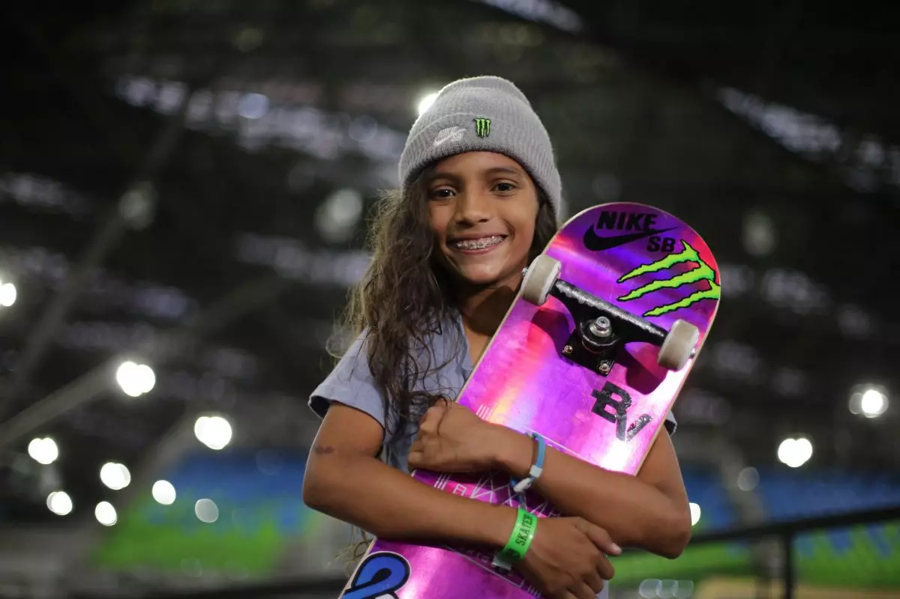
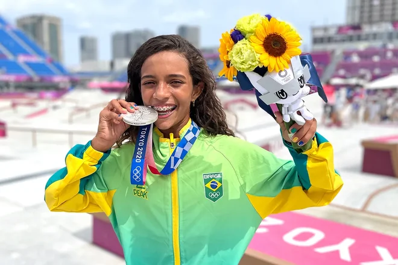
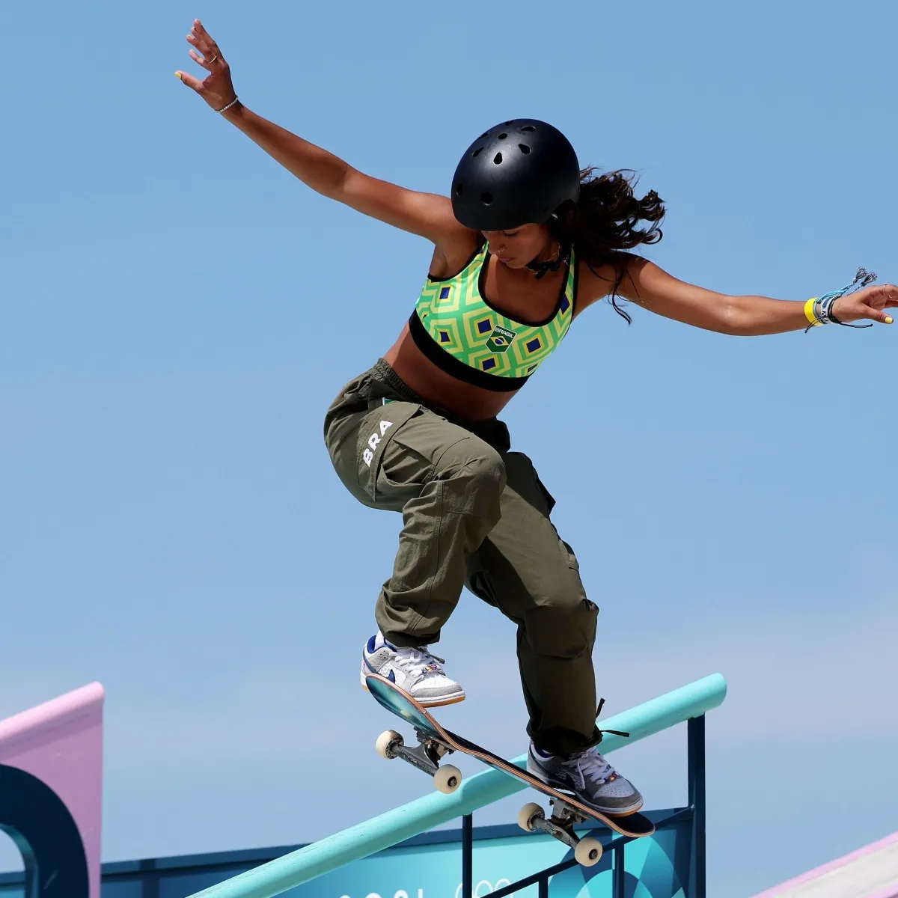
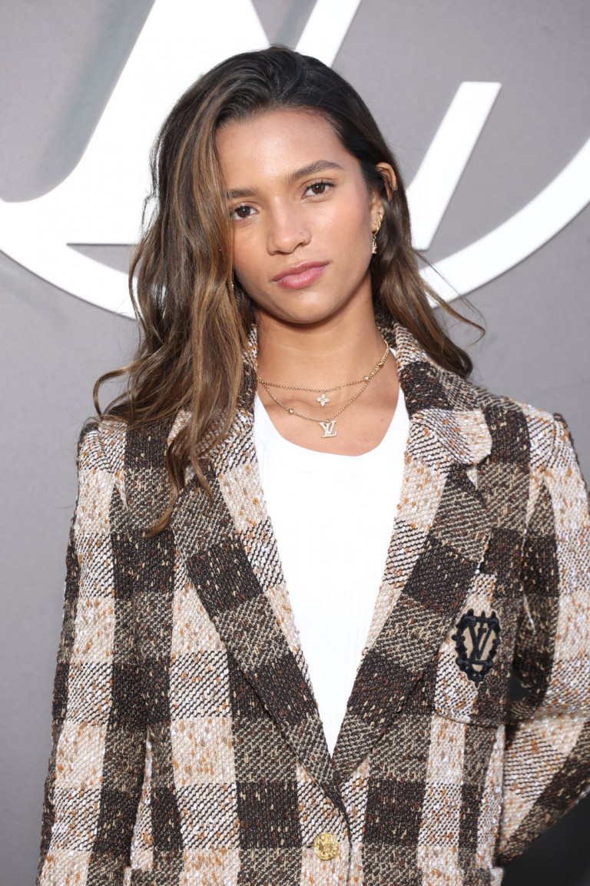
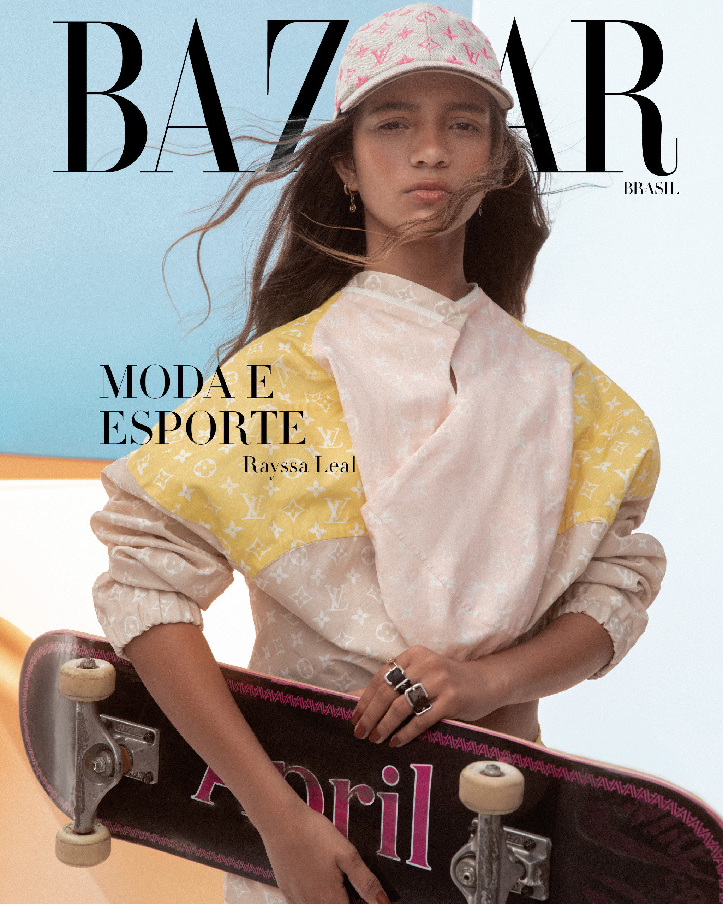
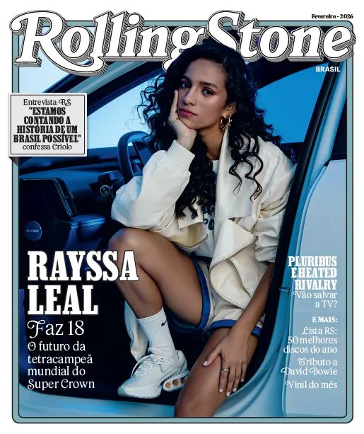
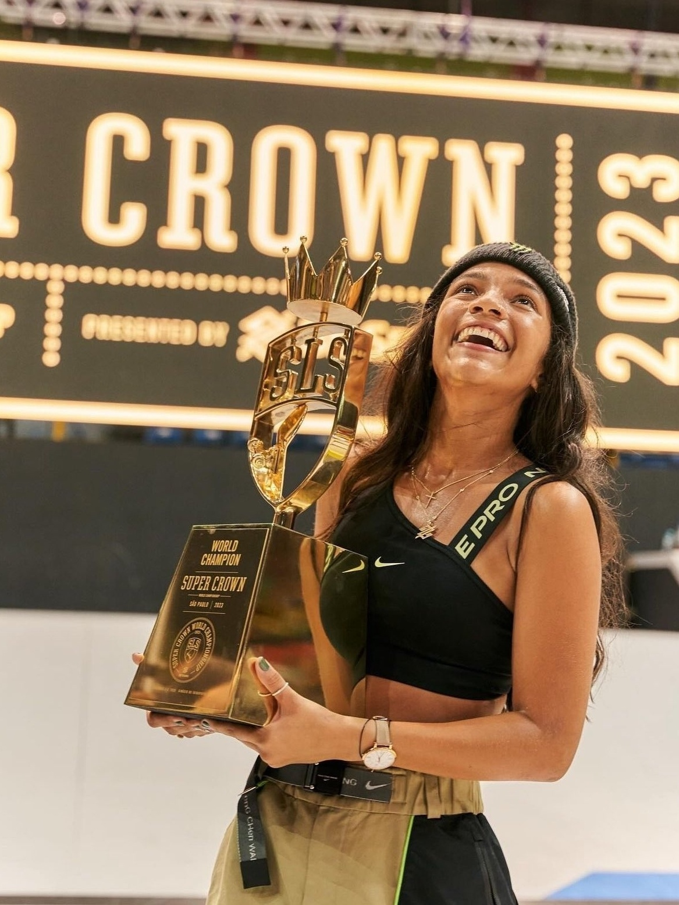

Rayssa Leal
skatista brasileira de Street Skate
Uma menina que, desde os 7 anos de idade, vem impressionando o público com seu "talento" e já conquistou 27 títulos internacionais na carreira aos 18 anos.

skatista brasileira de Street Skate
Uma menina que, desde os 7 anos de idade, vem impressionando o público com seu "talento" e já conquistou 27 títulos internacionais na carreira aos 18 anos.
Jhulia Rayssa Mendes Leal, conhecida como Rayssa Leal, nasceu em 4 de janeiro de 2008, em Imperatriz, no Maranhão. Seu contato com o skate começou aos seis anos, quando ganhou seu primeiro equipamento. Desde pequena, demonstrava facilidade e entusiasmo na realização de manobras, chamando a atenção para seu talento. Em 2015, aos sete anos, ganhou notoriedade após Tony Hawk, uma das maiores lendas do skate, compartilhar um vídeo em que realizava uma manobra vestida de fada, originando o apelido de “Fadinha do Skate”.
No mesmo ano, acompanhada de sua família, viajou de ônibus até Blumenau (SC) para participar do primeiro Campeonato Brasileiro de Skate Street Mirim, no qual se tornou a primeira campeã brasileira da modalidade. A partir dessa conquista, sua carreira ganhou impulso, levando-a a participar de importantes competições nacionais e internacionais. Em 2019, aos 11 anos, venceu a etapa de Los Angeles do Mundial de Skate Street, tornando-se a atleta mais jovem a conquistar uma etapa da competição. Em 2020, também foi indicada ao Prêmio Laureus, considerado o Oscar do Esporte.
Em 2021, aos 13 anos, Rayssa representou o Brasil nos Jogos Olímpicos de Tóquio, ao lado de Letícia Bufoni e Pâmela Rosa. Após avançar para a final do skate street feminino, conquistou a medalha de prata, tornando-se a mais jovem medalhista olímpica brasileira.
Além da conquista olímpica, recebeu o prêmio internacional “Valores Olímpicos”, concedido pelo Comitê Olímpico Internacional (COI), após ser a atleta mais votada pelo público, superando concorrentes como a ginasta americana Simone Biles. O reconhecimento também contemplou uma premiação de R$ 50 mil destinada ao apoio de uma instituição social.









Aos 6 anos de idade, começou a andar de skate após ganhá-lo como presente.
Aos 7 anos, viralizou na internet ao acertar uma manobra de skate fantasiada de fada. O skatista norte-americano Tony Hawk compartilhou o vídeo, gerando repercussão internacional.
Integrou a seleção brasileira de skate.
Com apenas 11 anos de idade, subiu ao pódio na primeira etapa da Liga Mundial (SLS).
Durante 5 anos, conquistou medalhas nos Jogos Olímpicos, Mundiais de Skate Street, SLS, X Games e Jogos Pan-Americanos, acumulando um total de 27 títulos internacionais na carreira
A atleta, com apenas 18 anos, torna-se embaixadora global dos Jogos Olímpicos da Juventude de Dakar 2026, reforçando sua verdadeira influência no esporte e seu papel como inspiração às novas gerações.